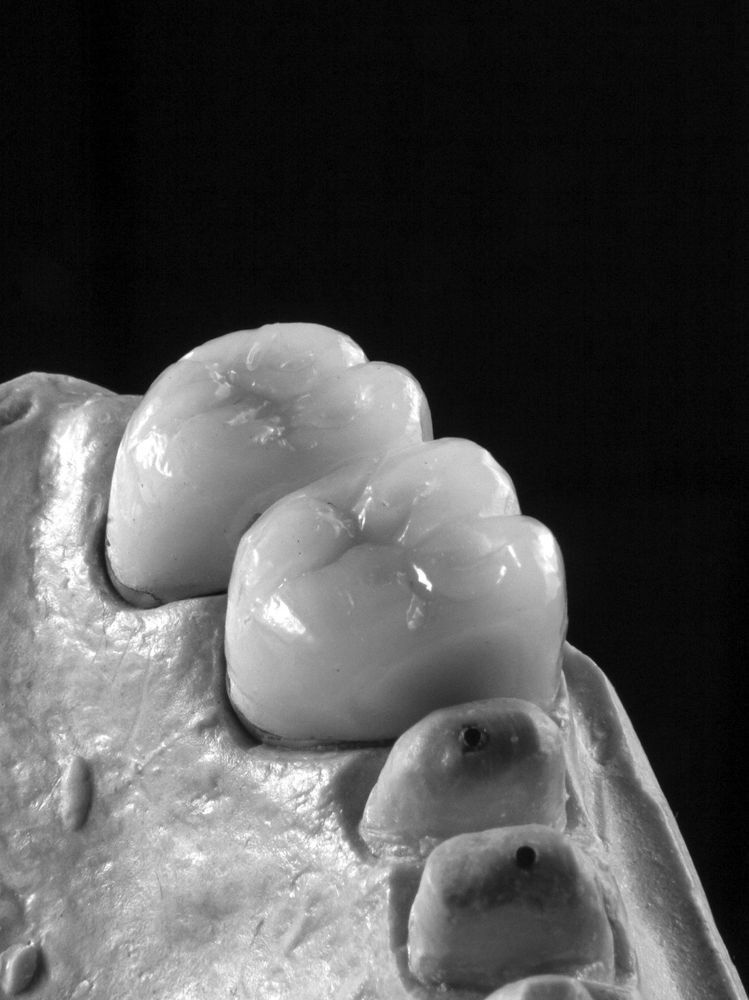

La firma
Una firma de M&A centrada en un solo sector.
AMG Advisory asesora a propietarios de laboratorios, grupos del sector e inversores en operaciones de compraventa de laboratorios de prótesis dental en España.

Cómo trabajamos
Trabajar en un único sector nos permite conocer a quienes compran en él, entender cómo se construye el valor de un laboratorio dental y hablar el mismo idioma que su propietario, que a menudo es también su técnico más experimentado.
Foco sectorial
Trabajamos con laboratorios de prótesis dental y con los grupos e inversores que adquieren en el sector.
Preparación antes del contacto
Analizamos el laboratorio, su posicionamiento y sus posibles compradores antes de cualquier aproximación a terceros.
Discreción y trato directo
La información solo se comparte con autorización del propietario: ni sus clínicas ni su equipo conocen el proceso hasta que él lo decide. El cliente trabaja siempre con las mismas personas.
Estructura
Parte de AMG Advisory AS.
La práctica de fusiones y adquisiciones forma parte de AMG Advisory AS, sociedad registrada en Noruega con número de organización 938 271 062. AMG Advisory asesora también en operaciones del sector de protección contra incendios y presta servicios de mejora digital y automatización a empresas. El equipo de M&A trabaja desde Madrid.
El equipo combina experiencia previa en banca corporativa y de inversión, análisis financiero y consultoría de estrategia y operaciones.
¿Valora vender su laboratorio, incorporar un socio o adquirir otro laboratorio?
Una primera conversación es reservada y no implica ningún compromiso.